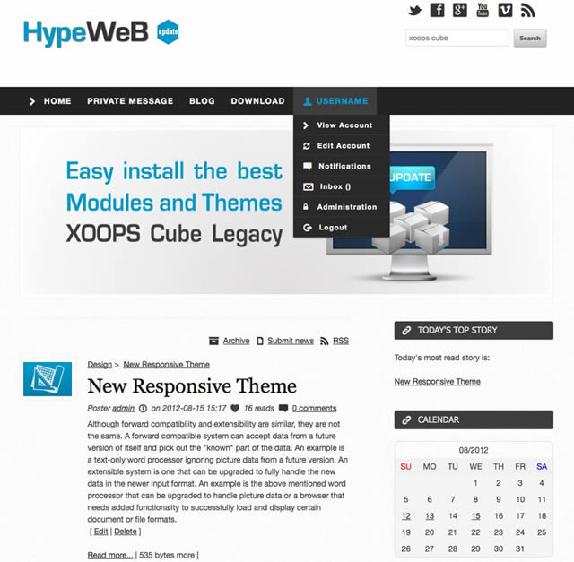
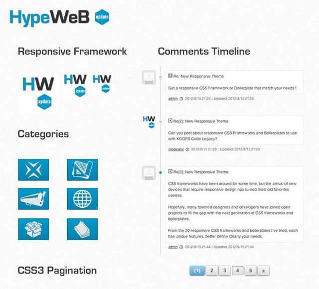

Theme :: Skeleton-Blog
XOOPS Cube Legacy Documentation
- Created: 08/08/2012
- latest Update: 08/17/2012
- By: Nuno Luciano
- github.com/gigamaster/xcl
Skeleton-Blog is a responsive theme for XOOPS Cube Legacy with custom elements and templates, which means it is compatible with mobile devices such as iPhone and iPad. It has a 2 level navigation, 2 columns and 3 bottom blocks. If you have any questions that are beyond the scope of this help file, if you found any bugs or have any suggestions, please feel free to "create a new issue" at GiHub XCL Themes repository!
Screenshot

Theme Features

- Fully Responsive
- Unique page layout (custom templates)
- Navigation with sub-menu
- Slider on homepage
- Comments Time-line
- Rounded Tables
- CSS3 Pagination
- CSS3 Buttons
- Icons Font based
- Embed responsive videos and screenshots
- multiple mobile devices
- iPhone
- iPad
- Android
- Blackberry
Installation
////////////////////////////// Theme Requirements
In order to begin installing Skeleton-Blog theme you need the latest version of XOOPS Cube Legacy.
Here is the download page at GitHub.
Download For Free
https://github.com/xoopscube/legacy/downloads
Once you downloaded and set-up XOOPS Cube Leacy, you are ready to install the requuired modules
to make the Skeleton-Blog theme work properly. First, get Altsys from the "/ extras / extras_modules"
in the downloaded archive of Legacy. Then install the module Bulletin (News).
////////////////////////////// Module Altsys
Alternative System Module & Library
Summary:
This module-library is required by D3 modules.
It's maintained by XOOPS Cube Team and released
as Altsys L extra_module of Legacy's package.
This module features an intuitive interface to manage
common tasks : modules blocks, templates, and
language catalog translation.
////////////////////////////// Module Bulletin
Bulletin (News) is a blogging module for XOOPS Cube Legacy.
Bulletin requires Altsys to be installed. The module is maintained
by xoopsX Team. Module features :
Use Tell A Friend module
Enable related articles feature
Display recent stories in the same category
Use secure friendly wysiwyg editor
Download here !
https://github.com/XoopsX/bulletin
////////////////////////////// Update Store
The module Bulletin and much more useful modules are available from Update Store.
xUpdate allows users to easily extend XOOPS Cube Legacy from Admin Panel by
automatically installing selected modules or themes and keep the CMS up-to-date.
Furthermore, xUpdate module requires cURL support, so you should check your server settings to make sure this option is available with your web host.
////////////////////////////// Skeleton-Blog Theme
Upon downloading the archive, you will have a "skeleton-blog" folder inside the themes package.
Upload this folder to the "themes" folder of your XOOPS Cube Legacy installation root directory.
Download here :
https://github.com/gigamaster/xcl-themes
Getting Started
Log into XOOPS Cube Legacy administration and click on the "Themes" link from Control Panel's header navigation.
Then activate the theme as you would activate any other theme. After that is done, you have to setup Blocks to Theme
navigation (Main Menu and User Menu) and change "Comment Display Mode" to display comments with the css timeline.
////////////////////////////// Module Legacy System
Go to : Legacy System »» Preferences »» General Settings
Comment Display Mode
Change the selection of "Default Comment Display Mode"
from "Nested" to "Flat".
////////////////////////////// Module News (Bulletin)
Go to : News (bulletin) »» Preferences
Display navigation box? [x] No
Timestamp (remove seconds) : Y-m-d H:i
Reflect posts to user's post count : [x] Yes
Path to category image directory
(change the directory to use theme images) :
[../public_html/themes/skeleton-blog/images/topics/ ]
Print friendly page image URL
(change to theme logo):
[ http://yourdomainame/themes/skeleton-blog/images/logo.png ]
Number of recent storeis in the same category : [ 5 ]
Comments Display Mode
View of comment-integration : [ Flat ]
////////////////////////////// Blocks Management
Go to Admin Panel : Block management
Top Navigation
Add only "Block Left" to Top Navigation !
-
Main Menu
set order (weight) to [ 1 ] -
User Menu
set order (weight) to [ 2 ]
////////////////////////////// Right Side Column
Recommended settings
-
Login
set order (weight) to [ 3 ] -
New Messages
set order (weight) to [ 4 ] -
Themes
set order (weight) to [ 5 ] -
Recent news
set order (weight) to [ 6 ]
////////////////////////////// Footer
Blocks Center, Left-Center-Right,
don'z hava any specific limit or requirement.
////////////////////////////// To do
Documentation and examples to implement plugins:
- Flickr
- Tabs
////////////////////////////// Credits & License
Skeleton-Blog Theme XCL
XOOPS Cube Legacy 2.2.x
27/07/2012
by Nuno Luciano
http://nunoluciano.info
https://github.com/gigamaster
/////////////////////////////////////////////////////////////////////////////////
License : Creative Commons
Attribution-ShareAlike 3.0 Unported (CC BY-SA 3.0)
http://creativecommons.org/licenses/by-sa/3.0/

Responsive XCL Theme Skeleton Blog by Nuno luciano is licensed under a
Creative Commons Attribution-ShareAlike 3.0 Unported License.